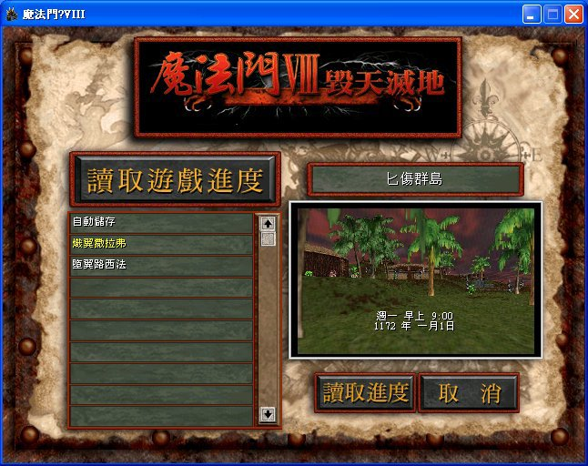
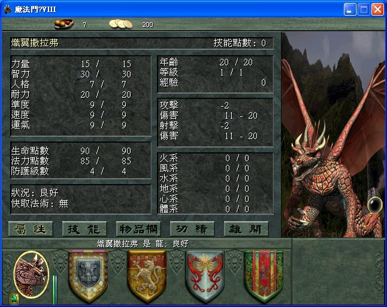
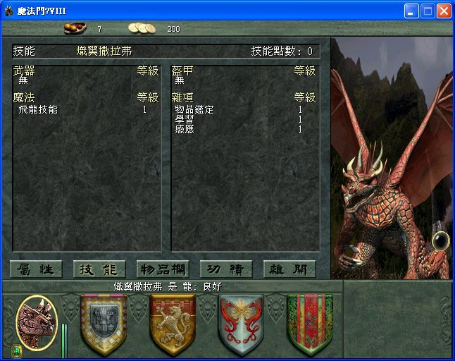
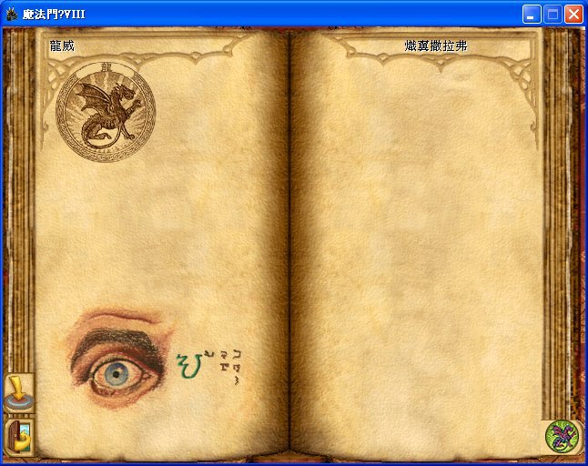

創角職業選龍的存檔下載
紅龍：20000307A_01.7z
青龍：20000307A_02.7z
使用方法
下載後，解壓，然後將檔案放到遊戲所在資料夾的「Saves」裡面。
如果你不知道遊戲安裝到哪裡，預設的路徑是「C:\Program Files\3DO\mm8」，不妨找看看。
然後執行遊戲，讀取進度就可以看到新手存檔了！

1172 年一月 1 日，週一，早上 9:00，確實是新手進度的存檔。進入遊戲後可以按 Y 鍵吼叫看看，龍的叫聲更能體驗新手就是龍的感覺。
其他介紹
參考遊戲中最強之龍的名字「永恆土洛斯」，將紅龍取為「熾翼撒拉弗」，青龍取為「墮翼路西法」，也就是「熾天使撒拉弗」和「墮天使路西法」的意思。
屬性則是這樣配的：

初始技能選擇將來能夠宗師級的三項：

初始技能：

這下賈達密大陸就算自願毀天滅地都很難，趕緊出發展開這場穩贏的旅程吧～！
可招募隊員一覽表
選了龍當主角，下一步就開始想規劃出最理想的陣容隊形！
5 級隊員
戴維林．阿肯那斯 死靈法師 匕傷群島冒險者旅店 遊戲一開始即可招募
艾爾斯貝斯．拉曼提亞 吸血鬼 匕傷群島冒險者旅店 遊戲一開始即可招募
費德瑞克．塔力米爾 牧師 匕傷群島血滴鎮 交付傳送水晶後可招募
賽蒙．譚普勒 騎士 匕傷群島廢棄神殿 進入廢棄神殿後可招募
羅哈尼．歐斯克理頓 黑暗精靈 阿爾瓦城 遊戲一開始即可招募
艾瑞斯 牛頭人 渡鴉海濱 遊戲一開始即可招募
伊斯希爾歌爾 龍 絞刑峽谷龍穴 遊戲一開始即可招募
15 級隊員
納山尼爾．羅伯茲 死靈法師 影旋山脈 遊戲一開始即可招募
蓋斯瑞克．摩枯妥拉 吸血鬼 影旋山脈 遊戲一開始即可招募
歐瓦都．彈指 食人妖 鐵鏽村 完成安置骨灰任務1
卡藍雅．麥莫瑞亞 死靈法師 渡鴉海濱城 完成尋找火湖證人任務
麥蘭德 牧師 渡鴉海濱城 完成尋找火湖證人任務
戴森．李藍 牧師 影旋死靈法師公會 完成尋找火湖證人任務
傑斯波．賽爾鵬 黑暗精靈 阿爾瓦城 完成尋找火湖證人任務
佛藍林 龍 鐵砂荒漠愛欣格洞穴 完成尋找火湖證人任務
蓮恩．暴風槍 騎士 絞刑峽谷 完成尋找暴風槍任務2
坦尼斯 牛頭人 霸殺煞之穴 完成霸殺煞之穴排水任務
瓦洛格．沙風 百戰食人妖 鐵砂荒漠 完成食人妖遷村任務3
30 級隊員
艾瑞克．史塔拉爾 暗精尊者 阿爾瓦城 完成種族同盟任務
賽斯瑞克．希索朋 百戰食人妖 鐵砂荒漠 完成種族同盟任務
因佛史塔斯 血族聖皇 影旋山脈 完成種族同盟任務
瑞歐耐爾 牛人王 霸殺煞之穴 完成種族同盟任務
海瓦提亞．代佛貝羅 巫妖 影旋山脈 完成種族同盟且與死靈結盟
瓦瑞西 太陽祭司 低語之森 完成種族同盟且與牧師結盟
耐力克斯．巫瑞爾 英豪 絞刑峽谷 完成種族同盟且與騎士結盟
布林史東 巨龍 影旋山脈雅達克洞穴 完成種族同盟且與龍族結盟
50 級隊員
考瑞．黑王座 暗精尊者 渡鴉海濱 完成拯救黑王座任務4
布拉森．暴風槍 英豪 渡鴉海濱 完成醫治暴風槍任務5
塔爾希爾 巫妖 影旋山脈 擊沉雷格那海盜艦隊
坦帕斯 英豪 絞刑峽谷 擊沉雷格那海盜艦隊
索恩．石下 百戰食人妖 渡鴉海濱 擊沉雷格那海盜艦隊
阿圖瑞斯．維瑞塔斯 血族聖皇 影旋山脈 擊沉雷格那海盜艦隊
烏布理契 牛人王 霸殺煞之穴 擊沉雷格那海盜艦隊
永恆土洛斯 巨龍 雷格那老羅伯洞穴 擊沉雷格那海盜艦隊
戴維許．契夫龍 太陽祭司 渡鴉海濱 擊沉海盜艦隊並救回暴風槍
屬性強化配方任務
有了好的隊員，接下來要讓主角成為當中最強的英雄！
遊戲有某一系列任務，蒐集簡單的材料給他，就會送你一瓶黑色藥劑，增加各式屬性 50 點。由於主角的屬性最低也有 9，全部解完屬性幾乎都 60 起跳，比那群 50 級英雄夥伴還要猛。
地點 住宅 藥劑 紅 藍 黃
－－ －－ －－ － － －
匕傷群島 希斯妥 速度 ４ ２ １
阿爾瓦 瑞漢西 運氣 ２ ３ ３
鐵砂荒漠 塔力安 耐力 ２ ４ １
絞刑峽谷 ………… 力量 … … …
影旋山脈 班耐費斯 智力 １ ２ ４
低語之森 東克 人格 １ ４ ２
荒煙迴廊 加文那斯 準度 ２ １ ４
絞刑峽谷的部分，開發者忘了設計進去，可見八代被批評說資料片不是沒道理的，草草完工的遊戲。但魔法門八其實很好玩，只是可以玩的東西過少，玩起來不過癮。
住宅所打的中文只是譯音，很可能和遊戲實際的中文不一樣，因此請當諧音做比對。
我的新手攻略流程
有了前三篇《魔法門 VIII 毀天滅地》的資料，這裡分享我的新手攻略流程。
奠定主角基礎
一開始的目標，是與匕傷群島結識的夥伴解完任務，讓主角的飛龍技能達到 7，並學會「學習」技能。
死靈法師與騎士不需要栽培，因此不用花錢提升他們等級。死靈法師純粹是為了施放「巫眼術」和「照明術」幫助隊伍作戰，但脫離匕傷群島會邀請考瑞．黑王座，屆時有旅人寶袋可用，因此死靈法師很快就沒有作用。騎士同樣很快就會被布拉森．暴風槍取代。
牧師和吸血鬼值得栽培，所以花錢讓他們學習技能，尤其是弓箭。但魔法技能的話，著重體系即可，這兩個職業主要是補血用。
攻略流程要點如下：
１．讓主角喝光水桶增加屬性，並利用水井將幸運提升至 17。
２．造訪居民探聽技能導師的情報，同時接任務。
３．招募隊員，找島上南方的海盜練功賺錢。
４．學習技能，金幣低於 90 可以到水井撈到 1000 元，有兩次機會。
５．一邊解任務，一邊將主角等級訓練至 5。
出島後，在渡鴉海濱的馬廄搭車前往絞刑峽谷，然後前往龍穴將主角的飛龍技能提升至大師級。如此，主角奠定蓋世神功的基礎了！
提醒兩件事：在渡鴉海濱記得喝噴泉，往後才可用城鎮傳送來此地。在絞刑峽谷記得找蓮恩．暴風槍接尋找她父親的任務，因為絞刑峽谷不在城鎮傳送的選項中，避免浪費好幾天的來回時間。
考瑞．黑王座
往渡鴉海濱北邊走，前往阿爾瓦，接取尋找考瑞．黑王座的任務。
最好買一本「城鎮傳送」的魔法書，並記得喝阿爾瓦泉水，以便日後可用魔法傳送到阿爾瓦。
往阿爾瓦西邊走前往低語之森，利用主角的「飛翔」，從空中突破光元素的攻擊網，找丹堤里安的居所領取解除石化的捲軸。
接著飛往低語之森東北方解救石化的考瑞．黑王座。
遣散死靈法師，到渡鴉海濱旅店招募考瑞．黑王座，然後讓她學習城鎮傳送。
渡鴉海濱北方有棵楊柳樹，點擊的話會開啟隱藏寶箱，裡面有把競賽之弓（遺物），適合讓考瑞．黑王座裝備。
提醒一件事：在低語之森時，記得找導師讓主角的「學習」提升為專家再離開，因為低語之森不在城鎮傳送的選項中，避免浪費好幾天的來回時間。
布拉森．暴風槍
賺錢在阿爾瓦買「隱形術」的魔法書，讓考瑞．黑王座學習。
往渡鴉海濱東方走，前往影旋山脈（同樣記得喝噴泉），然後飛往北方偏西的瘋狂死靈法師實驗室。
先施放隱形術，再進實驗室，免得跟這群怪物交手。直直走，搭上自動升降梯，點門和布拉森．暴風槍對話。
回渡鴉海濱找戴維許領取解除詛咒的寶石，就可以救出瘋狂死靈法師實驗室的布拉森．暴風槍，在旅店招募他，取代隊伍原本的騎士。
由於目的只是招募這 50 級的英豪，能力不夠的話不需要急著奪回艾邦斯特屠龍槍。
開始冒險吧！
就這樣，我的隊伍有飛龍職業的主角、50 級的暗精尊者、50 級的英豪、一名牧師、一名吸血鬼，開始踏上冒險的旅程，準備好好享受魔法門八的劇情任務…
金錢方面，可用黑王座的城鎮傳送，飛往影旋山脈購買海之銀塵，再飛往渡鴉海濱賣掉，最高一趟可以賺三萬左右。法力用完可以喝影旋山脈的噴泉水補回。
任務方面，鐵砂荒漠「禦火藥劑」任務回報後，任務清單依然存在，不喜歡這 BUG 的話最後再接。先解結盟任務「尋找龍卵」的話，達夫克勞．紅斧將不再有對話選項，導致巨龍轉職任務「殺掉惠索朋與所有狩龍獵人」無法回報，其實是他前往阿爾瓦議會中心了，要改去阿爾瓦回報任務，其他轉職任務回報對象為結盟領主依此類推。
其他等級 50 隊友方面，戴維許．契夫龍和布拉森．暴風槍是朋友，所以招募。遊戲預設和食人妖是同盟的關係，所以召募索恩．石下，他優勢在於血厚，是布拉森．暴風槍的兩倍，所以更能適應敵方的魔法攻擊，加上皮甲宗師能提升魔法抗性，使這點更有保障，以肉盾來講比布拉森．暴風槍更稱職！
主角（巨龍） 傷害輸出
索恩．石下（百戰食人妖） 能擋魔法傷害的肉盾
布拉森．暴風槍（英豪） 能擋物理傷害的肉盾
戴維許．契夫龍（太陽祭司） 補師、光系增益
考瑞．黑王座（暗精尊者） 弓箭物理傷害、闇火彈魔法傷害
因為有巨龍就夠了，不需要再有魔法傷害輸出，所以兩個肉盾加一個補師鞏固好生存能力，最後搭配一個弓兵幫打，是我認為能順利通關的隊伍。